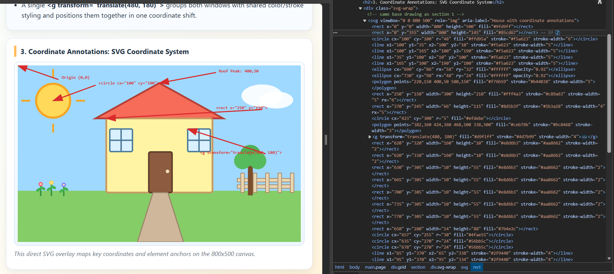

Data Visualization Assignment: SVG House and Garden
Responsive vector artwork, coordinate mapping, and DOM structure verification in one clean single-file web page.
1. Original Artwork: House and Garden
2. Project Implementation
The drawing is built from basic SVG primitives to show clear composition logic and coordinate placement.
- <rect> creates the sky/ground blocks, house body, door, and window frames.
- <circle> is used for the sun, door handle, and tree canopy shapes.
- <ellipse> forms soft cloud shapes with a rounded cartoon style.
- <line> draws sun rays and window pane dividers.
- <polygon> creates the triangular roof with exact corner points.
- <polyline> is used in the coordinate annotation SVG where connector paths can be extended as needed.
- <text> is used for coordinate labels and technical element callouts.
- A single <g transform="translate(480, 180)"> groups both windows with shared color/stroke styling and positions them together in one coordinate shift.
3. Coordinate Annotations: SVG Coordinate System

This image shows the coordinate map and key element anchors on the 800x500 canvas.
4. DOM Inspection

This screenshot proves the SVG primitives and grouped elements are attached to the Document Object Model.